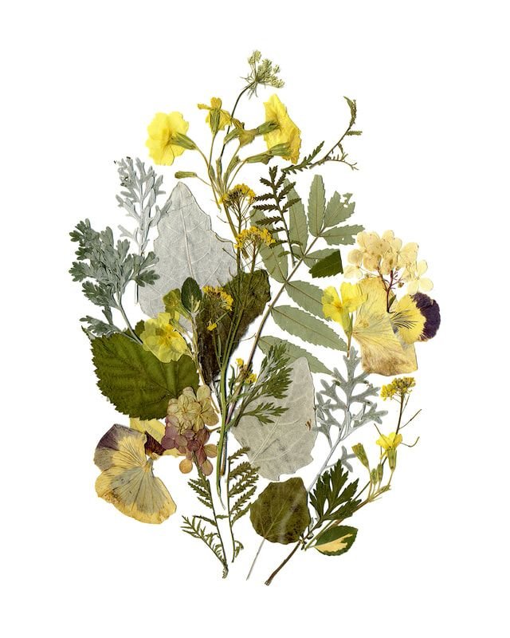
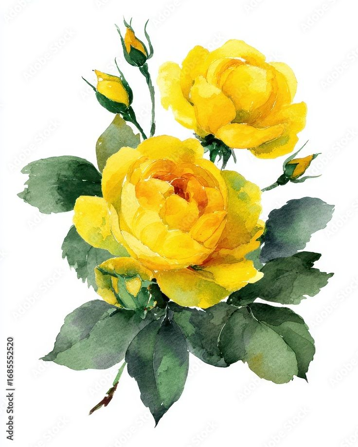
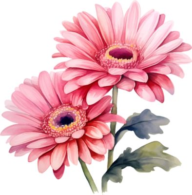
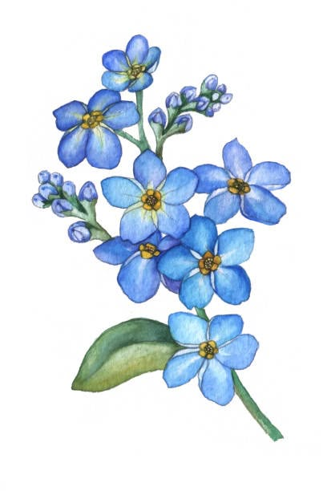
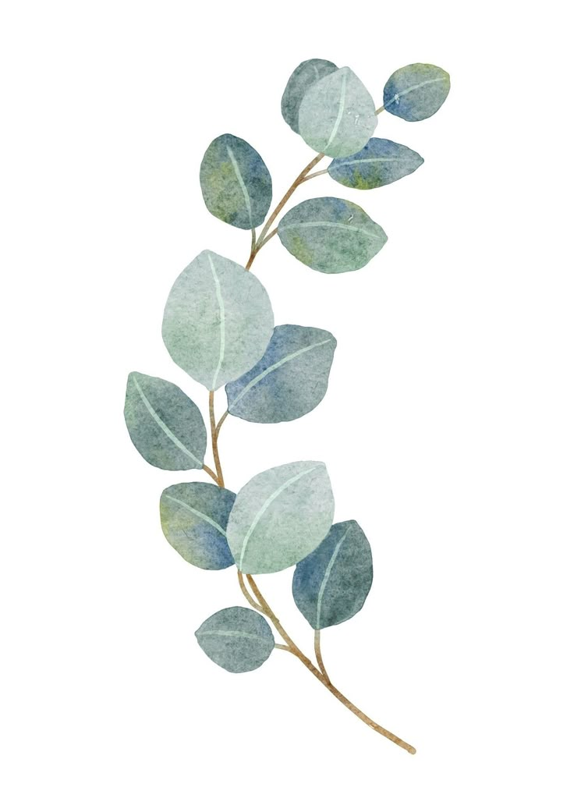

[cover-flower.jpg]
[plate-1.jpg]Tau nggak, padahal niatnya aku buat ini cuma untuk ucapan Selamat Ulang Tahun aja, tapi nggak nyangka, ternyata laman ini untuk say goodbye juga? wkwk.
(Sebel nggak gue nulis kek gini? pasti kamu sebel ya. Tapi bodo amat deh, kan aku memang orangnya Words of Affirmation xixixixi)
Aku masih inget pertama kali sebelum aku masuk DEKS, yang pertama kali nyapa aku duluan itu kamu mba wkwk (bukti foto terlampir). Randomly ngechat. Pas kamu minta maaf karena katanya KEDSOS berisik, jujur aku malah hepi banget. Karena ternyata orang orangnya nggak se-kaku yang aku kira di KP.
Dan ternyata bener aja, selama aku satu tahun lebih, dengan banyak banget kepusingan, ke-halu-an, dan dar der dor kanan kiri yang diterima oleh KEDSOS, ternyata kita masih bisa berisik aja tuh. Malah makin kesini makin tawa-tiwi. Terima kasih ya, kehadiran mbak Astrid itu 50% ketawanya KEDSOS, tahu.
(Jadi mungkin kepergianku yang mendadak ini juga cuma batu kerikil kecil dalam perjalanan KEDSOS ya. Amiin.)

[plate-2.jpg]Dan harus aku akui, salah satu peran yang buat KEDSOS survive itu bukan cuma karena vibes(?) kamu, tapi juga karena kompetensi kamu, Mbak Acid. Kamu bahkan mengajarkan aku banyak soal flow pengadaan, hubungan sama vendor, dan detil-detil soal birokrasi BI yang aku pun nggak tahu. And from that, I'm forever grateful. (Bisa jadi nanti aku masih chat kamu buat nanya2, hehe).
Namun lebih dari kompetensi, aku percaya keberlangsungan KEDSOS sampai saat ini juga berkat rasa tanggung jawab kamu. Karena kamu peduli sama ISEF, sama DEKS, dan sama Mbak Mega (dan KEDSOS juga, in extent).
Jadi, terima kasih ya.

[plate-3.jpg]Oiya, aku berharap kamu juga bener-bener diterima beasiswa ya. Udah cukup waktumu mengabdi pada BI mba. Sekarang waktunya dirimu mengabdi pada mimpimu sendiri. Semoga kamu bisa makin hepi dan berbunga, tetap merekah dengan tawamu yang nularin kita semua juga ikut bahagia.

[plate-4.jpg]Semoga otakmu makin tajam, dompetmu makin tajir, makeup mu nggada yang luntur, selalu ada waktu supaya bisa healing tipis-tipis, dan bunga-bunga di kebunmu makin mekar. Dan, semoga kisah (cinta)mu di sana mirip drakor-drakor yang so sweet dan happy ending. Pokoknya kita gaboleh jadi second lead di cerita kita sendiri!
Hmm... nulis apa lagi ya yang bisa bikin kamu mewek?
wkwk pokoknya punten sekali atas semua bantuan, kerjasama, dan persahabatan yang selama ini ada diantara kita. nuhun pisan kalau selama ini aku banyak salah-salah. Jangan lupakan aku ya. lupakan kesalahanku aja.